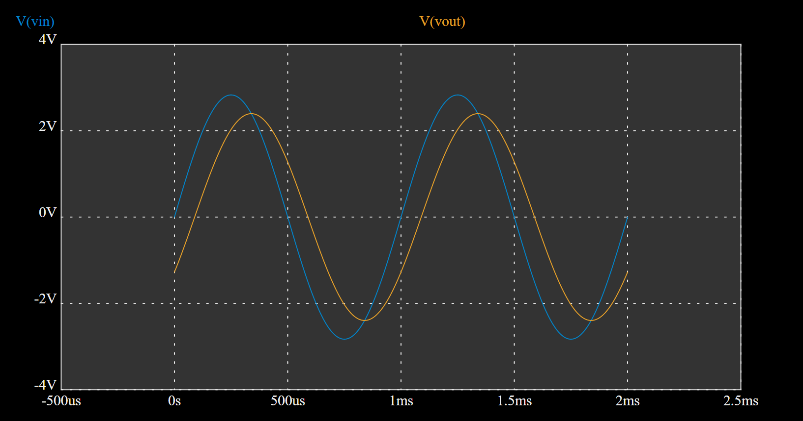

การวิเคราะห์และจำลองการทำงานของวงจรไฟฟ้ากระแสสลับ (AC Circuit Analysis)#
บทความนี้กล่าวถึง การวิเคราะห์วงจรไฟฟ้าพื้นฐานโดยมีสัญญาณอินพุตเป็นรูปคลื่นไซน์ และดูผลตอบสนองในสภาวะคงตัวของสัญญาณเอาต์พุต โดยใช้ซอฟต์แวร์จำลองการทำงาน และการทดลองต่อวงจรจริง
Keywords: Circuit Simulation, AC Circuit Analysis, EasyEDA
▷ วงจร RC#
วงจรไฟฟ้าพื้นฐานในตัวอย่างแรก เป็นวงจรที่ประกอบด้วยตัวต้านทาน (R) และตัวเก็บประจุไฟฟ้า (C) อย่างละหนึ่งตัว ซึ่งได้นำมาต่ออนุกรมกัน วงจรนี้มีอินพุตเป็นสัญญาณรูปคลื่นไซน์ (Sinusoidal Wave) และสัญญาณเอาต์พุตได้จากการวัดแรงดันไฟฟ้าตกคร่อมที่ตัวเก็บประจุ
รูป: วงจร RC สำหรับการทดลองวัดสัญญาณ (วาดผังวงจรด้วยซอฟต์แวร์ EasyEDA)
ถ้านำไปต่อวงจรทดลองบนเบรดบอร์ด ก็สามารถใช้เครื่องกำเนิดสัญญาณไฟฟ้า (Function Generator: FG) และใช้ออสซิลโลสโคป (Oscilloscope: OSC) จำนวน 2 ช่อง เพื่อวัดสัญญาณอินพุตและเอาต์พุตตามลำดับ
ในการทดลองเกี่ยวกับวงจรไฟฟ้ากระแสสลับ จะดูผลตอบสนองในสภาวะคงตัวของวงจร เมื่อมีการเปลี่ยนความถี่ในช่วงที่กำหนด (เรียกว่า AC Analysis หรือ Frequency-based Analysis) โดยวัดสัญญาณที่เป็นแรงดันไฟฟ้าตกคร่อมที่ตัวเก็บประจุซึ่งได้ถูกกำหนดให้เป็นสัญญาณเอาต์พุตในตัวอย่างนี้
ในวงจรตัวอย่าง มีค่า R=1kΩ และ C=0.1uF และกำหนดให้สัญญาณอินพุตรูปคลื่นไซน์
มีค่า Vrms = 2V หรือมีแอมพลิจูด Vp เท่ากับ Vrms/0.7071 = 2.8284V
การจำลองหรือวิเคราะห์วงจรไฟฟ้าด้วย EasyEDA ในโหมด Transient
(ตั้งค่า .tran 0 3m 1m 1u) ได้ผลดังนี้

รูป: คลื่นสัญญาณอินพุต (Vin) และ (Vout) เมื่อใช้ความถี่ 1kHz

รูป: คลื่นสัญญาณอินพุต (Vin) และ (Vout) เมื่อใช้ความถี่ 2kHz
รูป: คลื่นสัญญาณอินพุต (Vin) และ (Vout) เมื่อใช้ความถี่ 5kHz
การเปลี่ยนแปลงความถี่จะส่งผลต่อแอมพลิจูดและความต่างเฟสของสัญญาณเอาต์พุต และจากผลการจำลองการทำงานของวงจร จะเห็นได้ว่า ถ้าความถี่เพิ่มขึ้น จะทำให้แอมพลิจูดของเอาต์พุตลดลง และทำให้ความต่างเฟสระหว่างอินพุตกับเอาต์พุตเพิ่มมากขึ้น
แต่ถ้าจะทดลองเพื่อดูความสัมพันธ์ระหว่างความถี่กับแอมพลิจูดและเฟสของสัญญาณเอาต์พุต ให้เปลี่ยนมาใช้ผังวงจรใหม่ และจำลองการทำงานในโหมด AC Analysis ที่มีการตั้งค่าตามรูปตัวอย่างดังนี้ (ตั้งค่า AC Amplitude = 1V และ AC Phase = 0)
รูป: วงจร RC สำหรับการวิเคราะห์ในโหมด Transient และ AC Analysis ด้วยซอฟต์แวร์ EasyEDA
รูป: กราฟแสดงความสัมพันธ์ระหว่างความถี่กับแอมพลิจูด (หน่วยเป็น dB) และเฟส (หน่วยเป็นองศา) ของสัญญาณเอาต์พุต
จากผลการจำลองการทำงานจะเห็นได้ว่า ในช่วงความถี่ต่ำ แอมพลิจูดได้ประมาณ 0dB หรือ 1V และมีความต่างเฟสใกล้เคียง 0 องศา (ในรูปกราฟแสดงเป็นค่า 360 องศา) แต่เมื่อความถี่เพิ่มขึ้น จะทำให้แอมพลิจูด เริ่มลดลงต่ำกว่า 0dB และความต่างเฟสจะมีการเปลี่ยนแปลงเช่นกัน ในรูปกราฟ มุมเฟสของสัญญาณเอาต์พุตเริ่มลดลง แสดงว่า สัญญาณเอาต์พุตตามสัญญาณอินพุตและมีความต่างเฟสเพิ่มขึ้น เมื่อความถี่เพิ่มขึ้น
รูป: แสดงตำแหน่งด้วยเคอร์เซอร์เพื่อหาความถี่ที่ทำให้แอมพลิจูดมีค่าใกล้เคียง -3dB
รูป: แสดงตำแหน่งด้วยเคอร์เซอร์เพื่อหาความถี่ที่ทำให้มุมเฟสมีค่าใกล้เคียง 315 องศา (หรือ -45 องศา)
วงจร RC ในลักษณะนี้ ทำหน้าที่เป็นตัวกรองความถี่ต่ำแบบพาสซีฟ (Low-pass RC Filter) กล่าวคือ สัญญาณที่มีความถี่ต่ำจะผ่านตัวกรองได้ดีกว่าสัญญาณที่มีความถี่สูง
ความถี่ที่ทำให้สัญญาณเอาต์พุตมีแอมพลิจูดลดลงเหลือ 70.7% เมื่อเทียบกับแอมพลิจูดของสัญญาณอินพุต เรียกว่า -3dB Cut-Off Frequency
ในการวิเคราะห์วงจร "อิมพีแดนซ์" ของวงจร (Impedance: หรือ ความต้านทานเชิงซ้อน ซึ่งมีหน่วยเป็นโอห์ม) คำนวณได้จากผลรวมของความต้านทาน (Resistance: ) กับ "รีแอคแตนซ์" ของตัวเก็บประจุ (Capacitive Reactance: )
ดังนั้นถ้าคำนวณอัตราส่วนระหว่างสัญญาณเอาต์พุตต่อสัญญาณอินพุต (จำนวนเชิงซ้อน) โดยวิธีเหมือนกรณีของวงจรแบ่งแรงดันไฟฟ้า จะได้ดังนี้
ถ้าพิจารณาขนาด (Magnitude) และมุม (Phase) ตามลำดับ ก็จะได้สูตรสมการดังนี้
ความถี่ ที่ทำให้เงื่อนไขต่อไปนี้เป็นจริง เรียกว่า -3dB Cut-Off Frequency
ดังนั้นจึงสามารถคำนวณหาความถี่ สำหรับวงจร Low-pass RC Filter ได้ดังนี้
สำหรับความถี่ จะได้มุมเท่ากับ
ถ้าลองแทนค่าตัวเลข จะได้ความถี่ ดังนี้
ถ้าจะลองเขียนโค้ด Python เพื่อแสดงรูปกราฟ (Bode Plot) สำหรับวงจร RC ก็มีตัวอย่างดังนี้
import matplotlib.pyplot as plt
import numpy as np
R = 1000
C = 0.1e-6
# Generate frequency values from 10^2 Hz to 10^4 Hz
f = np.logspace(2, 4, num=100)
w = 2 * np.pi * f
# Calculate the magnitude response
H = 1 / np.sqrt(1 + (R * C * w)**2)
# Calculate the phase response
phi = -np.arctan(R * C * w)
# Plot the magnitude and phase responses
fig, ax = plt.subplots(2, 1, sharex=True, figsize=(10, 5))
# Plot the magnitude response (dB)
ax[0].semilogx(f, 20 * np.log10(H))
ax[0].set_ylabel('Magnitude (dB)')
ax[0].grid(True)
# Plot the phase response (degrees)
ax[1].semilogx(f, np.degrees(phi))
ax[1].set_xlabel('Frequency (Hz)')
ax[1].set_ylabel('Phase (degrees)')
ax[1].grid(True)
plt.savefig("c:\\work\\rc_plot.png")
plt.show()
รูป: Bode Plot สำหรับวงจร Low-pass RC Filter
▷ วงจร RL#
วงจรไฟฟ้าถัดไปเป็นวงจรที่ประกอบด้วยตัวต้านทาน (R) และตัวเหนี่ยวนำ (L) อย่างละหนึ่งตัว ซึ่งได้นำมาต่ออนุกรมกัน วงจรนี้มีอินพุตเป็นสัญญาณรูปคลื่นไซน์ และสัญญาณเอาต์พุตได้จากการวัดแรงดันไฟฟ้าตกคร่อมที่ตัวเหนี่ยวนำ
รูป: ผังวงจร RL สำหรับการต่อวงจรทดลองและวัดสัญญาณ
เมื่อจำลองการทำงานในโหมด Transient ด้วย EasyEDA และเลือกใช้ความถี่ 20kHz, 50kHz และ 100kHz ตามลำดับ จะได้ผลดังนี้
รูป: คลื่นสัญญาณอินพุตและเอาต์พุต เมื่อใช้ความถี่ 20kHz
รูป: คลื่นสัญญาณอินพุตและเอาต์พุต เมื่อใช้ความถี่ 50kHz
รูป: คลื่นสัญญาณอินพุตและเอาต์พุต เมื่อใช้ความถี่ 100kHz
จากผลการทดลองจะเห็นได้ว่า เมื่อความถี่เพิ่มขึ้น แอมพลิจูดของเอาต์พุตจะสูงขึ้น และความต่างเฟสจะลดลง
ถ้าลองจำลองการทำงานของวงจรในโหมด AC Analysis โดยกำหนดให้ AC Amplitude = 1V และ AC Phase = 0 จะได้ผลดังนี้
รูป: ผังวงจร RL สำหรับการจำลองการทำงานในโหมด AC Analysis
รูป: กราฟแสดงความสัมพันธ์ระหว่างความถี่กับขนาดแอมพลิจูดและมุมของสัญญาณเอาต์พุต
จากรูปกราฟ จะเห็นได้ว่า ในช่วงความถี่ต่ำ แอมพลิจูดของสัญญาณเอาต์พุตจะน้อยกว่าในช่วงความถี่สูง และมุมเฟสในช่วงความถี่ต่ำจะได้ 90 องศา และเพิ่มลดลง เมื่อความถี่เพิ่มขึ้น
ในการวิเคราะห์วงจร "อิมพีแดนซ์" ของวงจรนี้ () คำนวณได้จากผลรวมของความต้านทาน (Resistance: ) กับ "รีแอคแตนซ์" ของตัวเหนี่ยวนำ (Inductive Reactance: )
ถ้าคำนวณอัตราส่วนระหว่างสัญญาณเอาต์พุตต่อสัญญาณอินพุต (จำนวนเชิงซ้อน) โดยวิธีเหมือนกรณีของวงจรแบ่งแรงดันไฟฟ้า จะได้ดังนี้
ถ้าพิจารณาขนาด (Magnitude) และมุม (Phase) ตามลำดับ ก็จะได้สูตรสมการดังนี้
ความถี่ ที่ทำให้อัตราส่วนระหว่างแอมพลิจูดของสัญญาณเอาต์พุตต่อสัญญาณอินพุต ได้เท่ากับ หรือ ประมาณ 0.7071 คำนวณหาได้ดังนี้
ลองคำนวณจากค่าตัวเลข เช่น จะได้ความถี่ และจะได้มุม
▷ วงจร RLC#
วงจรถัดไปเป็นวงจรที่ประกอบด้วยตัวต้านทาน (R) ตัวเหนี่ยวนำ (L) และตัวเก็บประจุ (C) นำมาต่ออนุกรมกัน มีสัญญาณอินพุตเป็นรูปคลื่นไซน์ และวัดแรงดันตกคร่อมที่ตัวต้านทานเพื่อใช้เป็นสัญญาณเอาต์พุต
รูป: ผังวงจร RLC สำหรับการต่อวงจรทดลองและวัดสัญญาณ
รูป: ผังวงจร RLC สำหรับการจำลองการทำงานในโหมด Transient และ AC Analysis
ในการวิเคราะห์วงจร "อิมพีแดนซ์" ของวงจร คำนวณได้จากผลรวมของความต้านทาน และ "รีแอคแตนซ์" ของตัวเก็บประจุและตัวเหนี่ยวนำ
ความถี่ หรือ ที่ทำให้มีค่าอิมพีแดนซ์ของวงจรต่ำสุด เรียกว่า "ความถี่เรโซแนนซ์" (Resonance Frequency)
ดังนั้นจึงเขียนสมการเงื่อนไขได้ดังนี้
ถ้าลองคำนวณจากค่าตัวเลข เช่น จะได้ความถี่เรโซแนนซ์
ลองดูผลการวิเคราะห์วงจรด้วยซอฟต์แวร์ EasyEDA ในโหมด AC Analysis ดังนี้
รูป: ผลการวิเคราะห์วงจรในโหมด AC Analysis (ค่า ) สำหรับช่วงความถี่ 100Hz ถึง 1MHz
จากกราฟจะเห็นได้ว่า ในช่วงความถี่ต่ำกว่าความถี่เรโซแนนซ์ แอมพลิจูดของสัญญาณเอาต์พุตจะมีค่าน้อยมาก และมีมุมเฟสเป็นบวก แต่เมื่อเพิ่มความถี่ไปจนถึงความถี่เรโซแนนซ์ จะได้แอมพลิจูดสูงสุดและมุมเฟสเข้าใกล้ศูนย์ จากนั้นจะแอมพลิจูดจะเริ่มลดลงเมื่อความถี่สูงกว่าความถี่เรโซแนนซ์ และมีมุมเฟสเป็นลบ
ถ้าลองลดค่าความต้านทาน จาก ให้เป็น (ไม่ส่งผลต่อการเปลี่ยนความถี่เรโซแนนซ์) จะได้ผลลัพธ์ดังนี้ ซึ่งจะสามารถสังเกตเห็นจุดสูงสุดและการเปลี่ยนมุมเฟสจากบวกเป็นลบได้อย่างชัดเจน เมื่อความถี่อยู่ในช่วงใกล้เคียงกับความถี่เรโซแนนซ์
รูป: ผลการวิเคราะห์วงจรในโหมด AC Analysis (เปลี่ยนค่าให้ )
ตัวอย่างโค้ด Python โดยใช้แพคเกจ SymPy, NumPy และ matplotlib เพื่อแสดงรูปกราฟ Bode Plot สำหรับวงจร RLC มีดังนี้
import sympy as sym
import matplotlib.pyplot as plt
import numpy as np
sym.init_printing()
s, f = sym.symbols("s f")
R, L, C = sym.symbols("R L C")
H = R / (R + (L * s) + (1 / (s * C)))
H = H.simplify()
# Substitute the values for R, L, and C
H = H.subs([(R, 100), (L, 820e-6), (C, 0.1e-6)])
H = H.subs( {s: 1j*2*sym.pi*f})
H_mag = sym.lambdify(f, abs(H), "numpy")
H_phi = sym.lambdify(f, sym.arg(H), "numpy")
f = np.logspace(2, 6,num=500) # 10^2 .. 10^6 Hz
# Plot the magnitude and phase responses
fig, ax = plt.subplots(2, 1, sharex=True, figsize=(10, 5))
# Plot the magnitude response (dB)
ax[0].semilogx(f, 20 * np.log10(H_mag(f)))
ax[0].set_ylabel('Magnitude (dB)')
ax[0].grid(True)
# Plot the phase response (degrees)
ax[1].semilogx(f, np.degrees(H_phi(f)))
ax[1].set_xlabel('Frequency (Hz)')
ax[1].set_ylabel('Phase (degrees)')
ax[1].grid(True)
plt.savefig("c:\\work\\rlc_resonance.png")
plt.show()
รูป: Bode Plot () ที่ได้จากการทำงานของโค้ด Python
รูป: Bode Plot () ที่ได้จากการทำงานของโค้ด Python
▷ กล่าวสรุป#
บทความนี้ได้นำเสนอเนื้อหาเกี่ยวกับการวิเคราะห์วงจรพื้นฐานสำหรับกระแสสลับ โดยใช้ซอฟต์แวร์ EasyEDA จำลองการทำงานในโหมด Transient Analysis และ AC Analysis
This work is licensed under a Creative Commons Attribution-ShareAlike 4.0 International License.
Created: 2023-02-08 | Last Updated: 2023-02-08